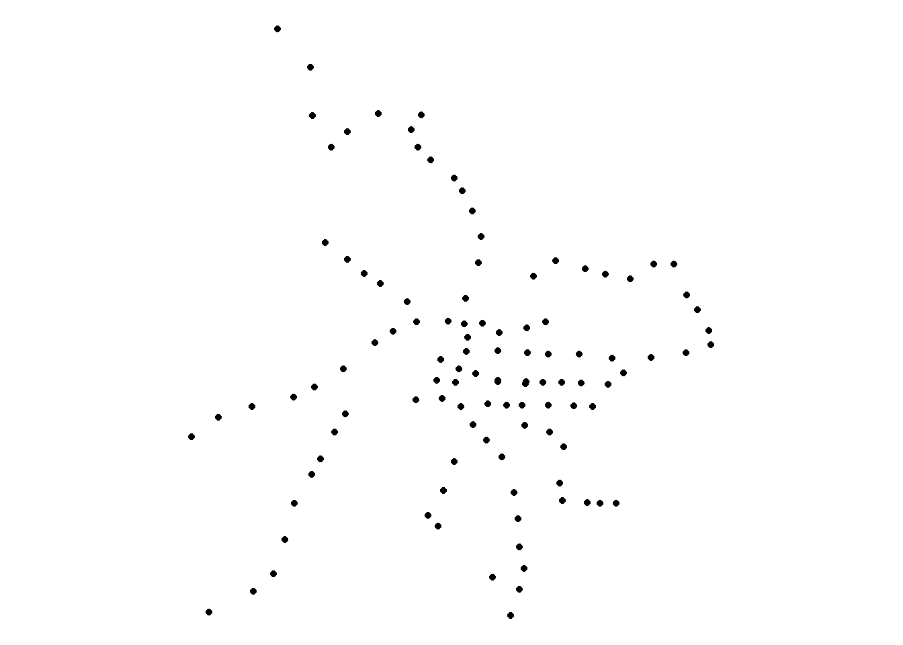

Chapter 2 軌道運輸資料
軌道運輸係指臺鐵、高鐵、捷運與輕軌，其中捷運系統包含臺北捷運、桃園機場捷運、臺中捷運、高雄捷運，輕軌系統含括新北捷運（淡海輕軌）與高雄輕軌。後續的函式中皆須設定營運機構之參數（operator=），請參照TDX_Railway表格，營運機構名稱與其相對應之代碼臚列如下。
TDX_Railway| 軌道運輸營運機構 | 代碼 |
|---|---|
| 臺鐵 | TRA |
| 高鐵 | THSR |
| 臺北捷運 | TRTC |
| 高雄捷運 | KRTC |
| 桃園捷運 | TYMC |
| 新北捷運 | NTDLRT |
| 臺中捷運 | TMRT |
| 高雄輕軌 | KLRT |
此外本資料之下載必須利用 API 金鑰，故函式中須輸入app_id=與app_key=兩參數，亦即在 1.6.2 API 金鑰申請的 APP ID 與 APP Key。
軌道運輸資料中提供站點、路線站點、路線線型、班表等資料。
2.1 軌道站點資料
◎ 資料概述
回傳資料為軌道運輸場站的站點屬性資料，欄位包括站點名稱、站點代碼、站點所在城市（縣市、鄉鎮）、經緯度等。
◎ 函式參數
Rail_Station(app_id, app_key, operator, dtype="text", out=FALSE)| 參數 | 必選填 | 功能 | 參數設定值 |
|---|---|---|---|
app_id=
|
必填參數 | [金鑰 APP ID] | 1.6.2 API 金鑰申請的 APP ID |
app_key=
|
[金鑰 APP Key] | 1.6.2 API 金鑰申請的 APP Key | |
operator=
|
營運機構代碼 |
請參照TDX_Railway表格
|
|
dtype=
|
選填參數 | 回傳的資料型態 |
text：純文字形式，其資料型態屬data.frame [預設值]
|
sf：地理資料形式，其資料型態屬sf
|
|||
out=
|
匯出資料之路徑 |
FALSE：不匯出資料至本機 [預設值]
|
|
若回傳的資料型態為「text」：路徑必須含有.csv或.txt
|
|||
若回傳的資料型態為「sf」：路徑必須含有.shp
|
◎ 程式碼撰寫範例
1. 回傳高鐵站點資料（純文字）
# 介接高鐵站點資料
THSR_station=Rail_Station(app_id, app_key, "THSR")## [1] "Success: (200) OK"
## [1] "#---THSR Station Downloaded---#"# 查看THSR_station資料
THSR_station
2. 回傳臺北捷運站點資料（地理資料）
# 介接臺北捷運鐵站點資料
TRTC_station=Rail_Station(app_id, app_key, "TRTC", dtype="sf")## [1] "Success: (200) OK"
## [1] "#---TRTC Station Downloaded---#"# 查看TRTC_station資料
TRTC_station# TRTC_station繪圖
ggplot()+
geom_sf(data=TRTC_station)+
theme_void()
NOTE
關於 R 語言地圖繪製方式，請參考 Spatial Analysis with R (Chia Jung, Yeh) 第三章